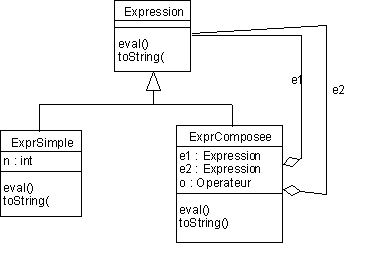

Thèmes : plusieurs classes , classe abstraite , graphe d'héritage (UML) , Pattern Composite
Dans la syntaxe abstraite :
1. catégories syntaxiques :
e,e1,e2 2. définition : e ::= n | e1 o e2 |
n est du type Entier mais la définition le montre comme 'un genre d'expression'.
La distinction de deux genres d'expression va permettre de ne plus avoir des expressions et des valeurs mélées dans les déclarations...
On obtient le schéma suivant : 
Remarques :
- Les seuls objets concrêts "manipulables" sont des expressions simples ou des expressions composées.
- Donc, la classe Expression "générale ne doit pas être instanciable : elle sera 'abstract'.
-
Des méthodes eval() et toString() sont implémentables seulement
dans les classes ExprSimple et ExprComposee.
Elles seront déclarées abstract et leurs corps ne sera pas défini. - e1 et e2 sont bien des expressions au sens général...
Ce schéma de construction d'une structure de données arborescentes avec différents type de noeuds possibles est
le pattern COMPOSITE (cf. GoF95)
Question 1 : Donner une implantation de ces classes
Question 2 : Donner le programme de
test modifié.
/* une idée...
Quelques conclusions :
+ |
- |
|
|